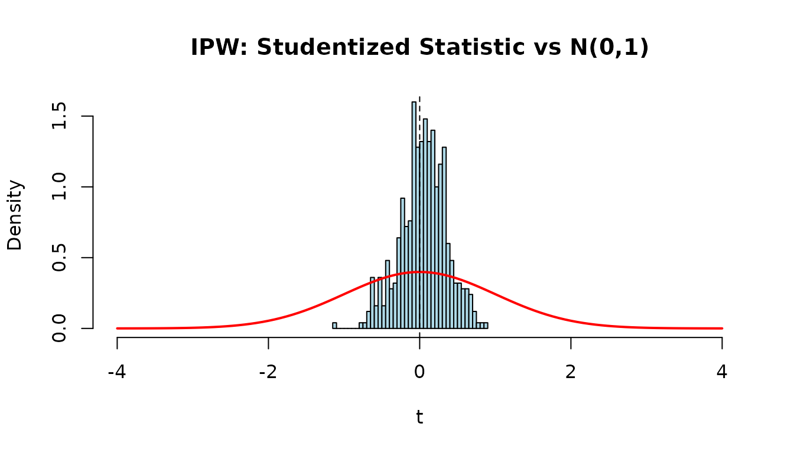
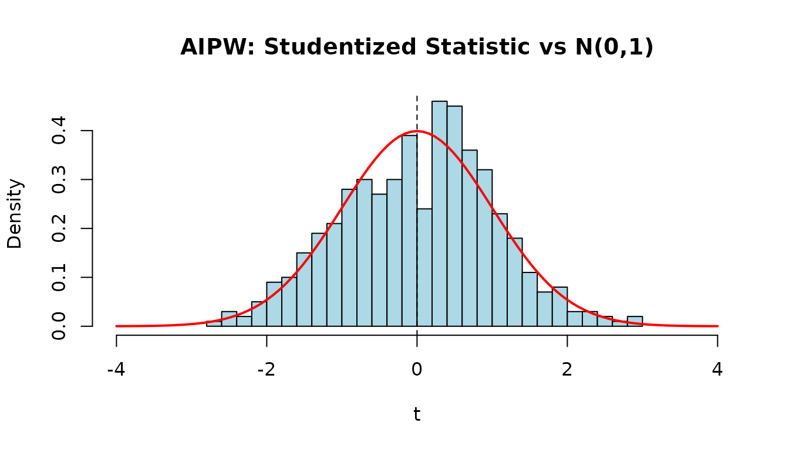
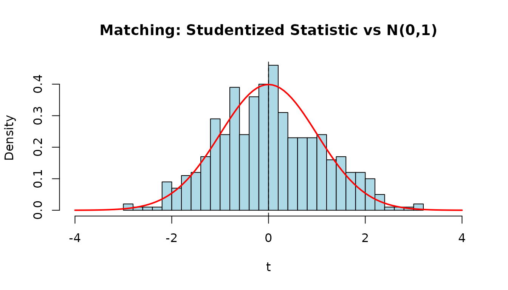
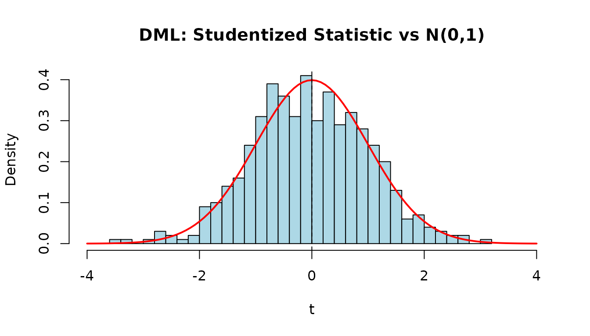
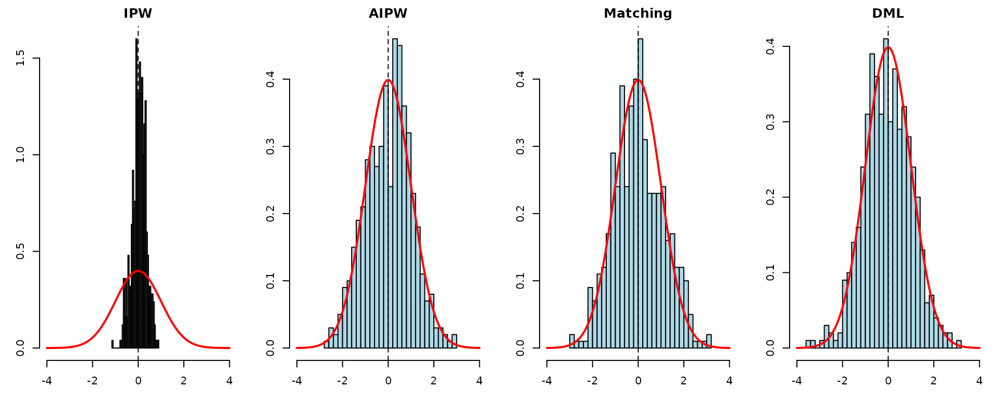

Overview
This vignette mirrors the Python observational.ipynb
test notebook, demonstrating all observational-study estimators in
CausalModel and validating their asymptotic properties via Monte Carlo
simulation.
Basic Usage
Binary Treatment
Generate data with known and apply each estimator:
data <- generate_data(N = 10000, k = 5, tau = 10)
obs <- observational(data$Y, data$Z, data$X)
est_via_ols(obs)
#> Causal Model Estimation Result
#> ------------------------------
#> ATE: 9.994851
#> SE: 0.015584
#> z: 641.3514
#> p-value: 0.0000
#> 95% CI: [9.964307, 10.025396]
est_via_ipw(obs)
#> Causal Model Estimation Result
#> ------------------------------
#> ATE: 10.074435
#> SE: 0.143352
#> z: 70.2778
#> p-value: 0.0000
#> 95% CI: [9.793471, 10.355399]
est_via_aipw(obs)
#> Causal Model Estimation Result
#> ------------------------------
#> ATE: 9.993525
#> SE: 0.025922
#> z: 385.5206
#> p-value: 0.0000
#> 95% CI: [9.942719, 10.044332]
est_via_matching(obs, num_matches = 10, num_matches_for_var = 20)
#> Causal Model Estimation Result
#> ------------------------------
#> ATE: 10.352785
#> SE: 0.026788
#> z: 386.4663
#> p-value: 0.0000
#> 95% CI: [10.300281, 10.405290]
est_via_matching(obs, num_matches = 10, num_matches_for_var = 20, bias_adj = TRUE)
#> Causal Model Estimation Result
#> ------------------------------
#> ATE: 10.004235
#> SE: 0.027014
#> z: 370.3334
#> p-value: 0.0000
#> 95% CI: [9.951289, 10.057182]Continuous Treatment (DML)
data_c <- generate_data_continuous(N = 10000, k = 5, tau = 10)
obs_c <- observational(data_c$Y, data_c$Z, data_c$X)
est_via_dml(obs_c)
#> Causal Model Estimation Result
#> ------------------------------
#> ATE: 9.988061
#> SE: 0.009900
#> z: 1008.9088
#> p-value: 0.0000
#> 95% CI: [9.968658, 10.007464]Simulation 1: IPW
We run 500 replications of IPW estimation to check that the studentized statistic is approximately .
n_reps <- 500
tau <- 10
ipw_results <- matrix(NA, nrow = n_reps, ncol = 2,
dimnames = list(NULL, c("ate", "se")))
for (i in seq_len(n_reps)) {
data <- generate_data(N = 1000, k = 2, tau = tau)
obs <- observational(data$Y, data$Z, data$X)
r <- est_via_ipw(obs)
ipw_results[i, ] <- c(r$ate, r$se)
}
t_ipw <- (ipw_results[, "ate"] - tau) / ipw_results[, "se"]
hist(t_ipw, breaks = 30, freq = FALSE, col = "lightblue",
main = "IPW: Studentized Statistic vs N(0,1)",
xlab = "t", xlim = c(-4, 4))
curve(dnorm(x), add = TRUE, col = "red", lwd = 2)
abline(v = 0, lty = 2)
ates <- ipw_results[, "ate"]
ses <- ipw_results[, "se"]
ci_lo <- ates - 1.96 * ses
ci_hi <- ates + 1.96 * ses
knitr::kable(data.frame(
Bias = mean(ates) - tau,
RMSE = sqrt(mean((ates - tau)^2)),
Mean_SE = mean(ses),
Emp_SE = sd(ates),
Coverage = mean(ci_lo <= tau & tau <= ci_hi)
), digits = 3, caption = "IPW (N=1000, 500 reps)")| Bias | RMSE | Mean_SE | Emp_SE | Coverage |
|---|---|---|---|---|
| 0.014 | 0.15 | 0.448 | 0.149 | 1 |
Simulation 2: AIPW
aipw_results <- matrix(NA, nrow = n_reps, ncol = 2,
dimnames = list(NULL, c("ate", "se")))
for (i in seq_len(n_reps)) {
data <- generate_data(N = 1000, k = 2, tau = tau)
obs <- observational(data$Y, data$Z, data$X)
r <- est_via_aipw(obs)
aipw_results[i, ] <- c(r$ate, r$se)
}
t_aipw <- (aipw_results[, "ate"] - tau) / aipw_results[, "se"]
hist(t_aipw, breaks = 30, freq = FALSE, col = "lightblue",
main = "AIPW: Studentized Statistic vs N(0,1)",
xlab = "t", xlim = c(-4, 4))
curve(dnorm(x), add = TRUE, col = "red", lwd = 2)
abline(v = 0, lty = 2)
ates <- aipw_results[, "ate"]
ses <- aipw_results[, "se"]
ci_lo <- ates - 1.96 * ses
ci_hi <- ates + 1.96 * ses
knitr::kable(data.frame(
Bias = mean(ates) - tau,
RMSE = sqrt(mean((ates - tau)^2)),
Mean_SE = mean(ses),
Emp_SE = sd(ates),
Coverage = mean(ci_lo <= tau & tau <= ci_hi)
), digits = 3, caption = "AIPW (N=1000, 500 reps)")| Bias | RMSE | Mean_SE | Emp_SE | Coverage |
|---|---|---|---|---|
| 0.002 | 0.087 | 0.086 | 0.087 | 0.954 |
Simulation 3: Matching
Nearest-neighbor matching with bias adjustment.
match_results <- matrix(NA, nrow = n_reps, ncol = 2,
dimnames = list(NULL, c("ate", "se")))
for (i in seq_len(n_reps)) {
data <- generate_data(N = 1000, k = 2, tau = tau)
obs <- observational(data$Y, data$Z, data$X)
r <- est_via_matching(obs, num_matches = 1, bias_adj = TRUE)
match_results[i, ] <- c(r$ate, r$se)
}
t_match <- (match_results[, "ate"] - tau) / match_results[, "se"]
hist(t_match, breaks = 30, freq = FALSE, col = "lightblue",
main = "Matching: Studentized Statistic vs N(0,1)",
xlab = "t", xlim = c(-4, 4))
curve(dnorm(x), add = TRUE, col = "red", lwd = 2)
abline(v = 0, lty = 2)
ates <- match_results[, "ate"]
ses <- match_results[, "se"]
ci_lo <- ates - 1.96 * ses
ci_hi <- ates + 1.96 * ses
knitr::kable(data.frame(
Bias = mean(ates) - tau,
RMSE = sqrt(mean((ates - tau)^2)),
Mean_SE = mean(ses),
Emp_SE = sd(ates),
Coverage = mean(ci_lo <= tau & tau <= ci_hi)
), digits = 3, caption = "Matching (N=1000, 500 reps)")| Bias | RMSE | Mean_SE | Emp_SE | Coverage |
|---|---|---|---|---|
| 0.001 | 0.1 | 0.092 | 0.1 | 0.924 |
Simulation 4: DML (Continuous Treatment)
Double machine learning with 2-fold cross-fitting for continuous treatment.
dml_results <- matrix(NA, nrow = n_reps, ncol = 2,
dimnames = list(NULL, c("ate", "se")))
for (i in seq_len(n_reps)) {
data <- generate_data_continuous(N = 1000, k = 2, tau = tau)
obs <- observational(data$Y, data$Z, data$X)
r <- est_via_dml(obs, k_folds = 2)
dml_results[i, ] <- c(r$ate, r$se)
}
t_dml <- (dml_results[, "ate"] - tau) / dml_results[, "se"]
hist(t_dml, breaks = 30, freq = FALSE, col = "lightblue",
main = "DML: Studentized Statistic vs N(0,1)",
xlab = "t", xlim = c(-4, 4))
curve(dnorm(x), add = TRUE, col = "red", lwd = 2)
abline(v = 0, lty = 2)
ates <- dml_results[, "ate"]
ses <- dml_results[, "se"]
ci_lo <- ates - 1.96 * ses
ci_hi <- ates + 1.96 * ses
knitr::kable(data.frame(
Bias = mean(ates) - tau,
RMSE = sqrt(mean((ates - tau)^2)),
Mean_SE = mean(ses),
Emp_SE = sd(ates),
Coverage = mean(ci_lo <= tau & tau <= ci_hi)
), digits = 3, caption = "DML (N=1000, 500 reps)")| Bias | RMSE | Mean_SE | Emp_SE | Coverage |
|---|---|---|---|---|
| -0.001 | 0.032 | 0.031 | 0.032 | 0.948 |
All Histograms
Summary panel of all four estimators:
par(mfrow = c(1, 4), mar = c(3, 3, 2, 1))
for (info in list(
list(t_ipw, "IPW"), list(t_aipw, "AIPW"),
list(t_match, "Matching"), list(t_dml, "DML"))) {
hist(info[[1]], breaks = 30, freq = FALSE, col = "lightblue",
main = info[[2]], xlab = "t", xlim = c(-4, 4))
curve(dnorm(x), add = TRUE, col = "red", lwd = 2)
abline(v = 0, lty = 2)
}